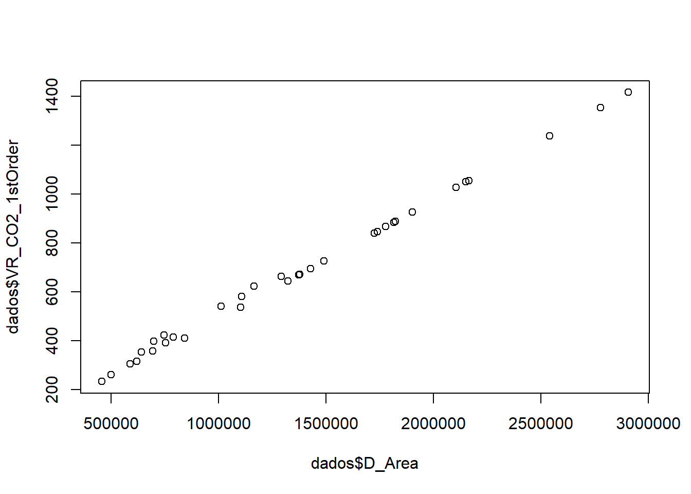
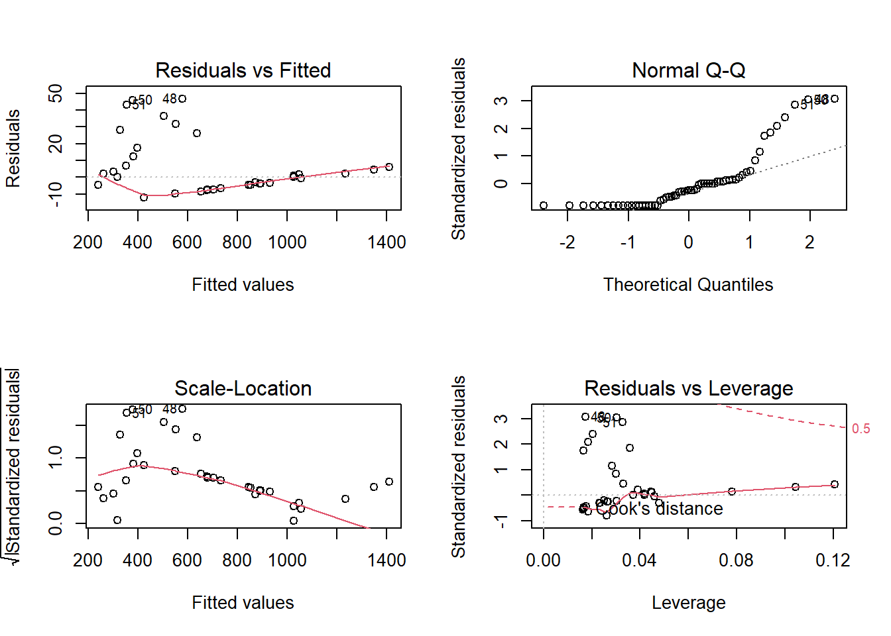

Capítulo 3 Modelos lineares
Resumidamente, modelos lineares são utilizados para resumir relações observadas a partir de dados, no caso, ambientais, em uma linha reta. Em um modelo linear descreve-se o comportamento de uma variável dependente (ou variável resposta, y) como função de uma ou mais variáveis independentes (ou variáveis explicativas, x).
3.1 Covariância
A Covariância, denotada \(\sigma_{xy}\), descreve a variação, em relação a média, entre duas variáveis.
\(cov(x,y) = \frac{\sum(x_i - \overline{x})}{n-1}\)
Portanto, é possível saber se ambas variáveis desviam na mesma direção (covariância positiva) ou se desviam em direções opostas (covariância negativa). Caso a covariância entre duas variáveis seja zero, a conclusão é que as variáveis são independentes.
knitr::include_graphics("~/UFABC Beatriz/TG Beatriz Lima/Dados/Figuras/Covariancia.png")
(#fig:fig-3.1)Covariância
3.2 Correlação
A Correlação é útil para medir a relação linear entre duas variáveis x e y, denotada por \(\rho_{xy}\).
\(\rho_xy = \frac{cov(x,Y)}{\sqrt(V(x)V(Y))}\)
Sendo assim, duas variáveis podem estar relacionadas das seguintes formas:
- Positivamente relacionadas. Ou seja, se x aumenta, y aumenta. E o mesmo ocorre para caso X diminua (Y diminui) - Correlação positiva;
- Negativamente relacionadas. Ou seja, se x aumenta, y diminui. E o mesmo ocorre para caso x diminua (Y aumenta) - Correlação negativa;
- Não há relação entre as duas variáveis.
knitr::include_graphics("~/UFABC Beatriz/TG Beatriz Lima/Dados/Figuras/Correlação.jpg")
(#fig:fig-3.2)Covariância
Uma forma gráfica de visualizar a correlação das variáveis que apresenta grande utilidade é a partir do Diagrama de Dispersão. O diagrama traz informações importantes porque mostra se a relação entre as variáveis é linear ou não, se existem outliers no conjunto de dados e traz uma ideia de quão forte é o relacionamento entre as variáveis.
3.3 Regressão linear simples
A partir da regressão, é possível obter a relação matemática que descreva a relação entre duas ou mais variáveis. A análise de regressão é uma coleção de ferramentas estatísticas que permite a modelagem e inferência de uma variável dependente (y) com uma ou mais variáveis independentes (x). No caso da regressão linear simples, somente existe uma variável independente; para a regressão linear múltipla, mais de uma. Dessa forma, o formato básico do modelo linear resultante é:
\(Y = \beta_0 + \beta_1X_1 + ... +\beta_1X_i + \xi_i\)
De acordo com Montgomery & Runger (2021), o modelo de regressão é, na verdade, uma linha de valores médios. Ou seja, “a altura da linha de regressão em qualquer valor de x é apenas o valor esperado de Y para aquele x. O coeficiente angular, \(\beta_1\), pode ser interpretado como a mudança na média de Y para uma mudança unitária em x. Além disso, a variabilidade de Y, em um valor particular de x, é determinada pela variância do erro \(\sigma^2\)”. Portanto, há uma distribuição de valores de Y em cada x de forma que a variância da distribuição é constante em cada x.
Aplicação
Para a aplicação serão utilizados dados de emissões dos gases de efeito estufa (GEE) por mudanças de cobertura da terra da Amazônia Legal disponibilizados pelo INPE (Instituto Nacional de Pesquisas Espaciais). Será representada a relação entre a área desmatada por ano e a emissão de 1ª ordem de \(CO_2\) na Amazônia Legal.A estimativa de 1ª ordem supõe que, de modo simplificado, 100% das emissões ocorreram no momento da mudança de uso/cobertura.
options("install.lock"=FALSE)
## Carregar pacotes que serão usados
if(!require(pacman)) install.packages("pacman")## Carregando pacotes exigidos: pacman## Warning: package 'pacman' was built under R version 4.1.3library(pacman)
## Checando repositório
setwd("C:/Users/Luiz Arthur/Dropbox/PC/Documents/UFABC Beatriz/TG Beatriz Lima/Dados")
## Carregar base de dados
dados <- read.csv2("CO2Amazonia.csv")
View(dados)
# Verificando pressupostos para a regressão linear
## Relação linear entre a VD e a VI
plot(dados$D_Area, dados$VR_CO2_1stOrder)
## Construção do modelo
mod <- lm(VR_CO2_1stOrder ~ D_Area, dados)
## Análise gráfica
par(mfrow=c(2,2)) ## Os gráficos que vem depois, sairão com imagens de 2 linhas e 2 colunas
plot(mod) ## Gráfico de regressão linear
par(mfrow=c(1,1)) ## Gráficos saem sozinhos na visualização
## Normalidade dos resíduos
shapiro.test(mod$residuals)##
## Shapiro-Wilk normality test
##
## data: mod$residuals
## W = 0.75119, p-value = 8.119e-09## Outliers nos resíduos
summary(rstandard(mod)) ## Saber o resumo/sumário dos resíduos padronizados## Min. 1st Qu. Median Mean 3rd Qu. Max.
## -0.8036784 -0.8036784 -0.2565440 0.0008034 0.1001292 3.0676706## Independência dos resíduos (Durbin-Watson)
#durbinWatsonTest(mod) <- procurar função no pacote
## Homocedasticidade (Breusch-Pagan)
#bptest(mod) <- procurar função no pacote
## Análise do modelo
summary(mod)##
## Call:
## lm(formula = VR_CO2_1stOrder ~ D_Area, data = dados)
##
## Residuals:
## Min 1Q Median 3Q Max
## -12.178 -12.178 -3.886 1.503 46.689
##
## Coefficients:
## Estimate Std. Error t value Pr(>|t|)
## (Intercept) 2.005e+01 4.593e+00 4.364 5.21e-05 ***
## D_Area 4.783e-04 3.134e-06 152.615 < 2e-16 ***
## ---
## Signif. codes: 0 '***' 0.001 '**' 0.01 '*' 0.05 '.' 0.1 ' ' 1
##
## Residual standard error: 15.35 on 59 degrees of freedom
## Multiple R-squared: 0.9975, Adjusted R-squared: 0.9974
## F-statistic: 2.329e+04 on 1 and 59 DF, p-value: < 2.2e-16Residuals vs Fitted O gráfico mostra se os resíduos tem padrões não-lineares.
Normal Q-Q O gráfico mostra se os resíduos são normalmente distribuídos.
Scale-Location O gráfico mostra se os resíduos são igualmente distribuídos em relação ao intervalo de preditores (Fitted values).Também é possível checar a homocedasticidade.
Residuals vs Leverage O gráfico ajuda na visualização de possíveis casos influentes, ou seja, outliers que influenciam na análise de regressão linear. O que quer dizer que, sem o outlier, o resultado da regressão seria diferente.
De acordo com o teste de Shapiro, é possível confirmar que p-value tem valor menos que 0,05 e, portanto, possui distribuição diferente da normal.
There are two steps to cross-reference any heading:
- Label the heading:
# Hello world {#nice-label}.- Leave the label off if you like the automated heading generated based on your heading title: for example,
# Hello world=# Hello world {#hello-world}. - To label an un-numbered heading, use:
# Hello world {-#nice-label}or{# Hello world .unnumbered}.
- Leave the label off if you like the automated heading generated based on your heading title: for example,
- Next, reference the labeled heading anywhere in the text using
\@ref(nice-label); for example, please see Chapter ??.- If you prefer text as the link instead of a numbered reference use: any text you want can go here.
3.4 Captioned figures and tables
Figures and tables with captions can also be cross-referenced from elsewhere in your book using \@ref(fig:chunk-label) and \@ref(tab:chunk-label), respectively.
See Figure 3.1.
par(mar = c(4, 4, .1, .1))
plot(pressure, type = 'b', pch = 19)
Figure 3.1: Here is a nice figure!
Don’t miss Table 3.1.
knitr::kable(
head(pressure, 10), caption = 'Here is a nice table!',
booktabs = TRUE
)| temperature | pressure |
|---|---|
| 0 | 0.0002 |
| 20 | 0.0012 |
| 40 | 0.0060 |
| 60 | 0.0300 |
| 80 | 0.0900 |
| 100 | 0.2700 |
| 120 | 0.7500 |
| 140 | 1.8500 |
| 160 | 4.2000 |
| 180 | 8.8000 |